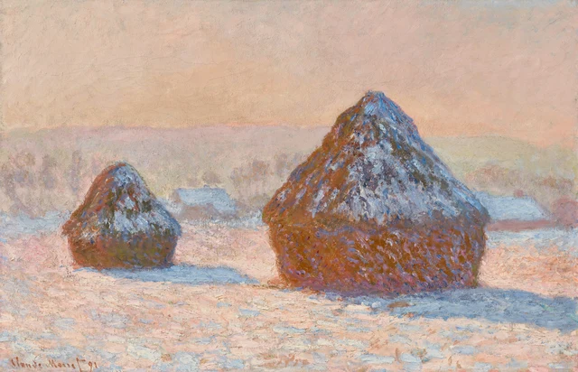
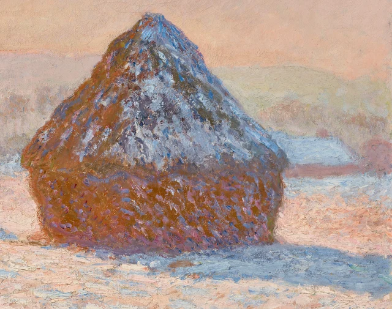
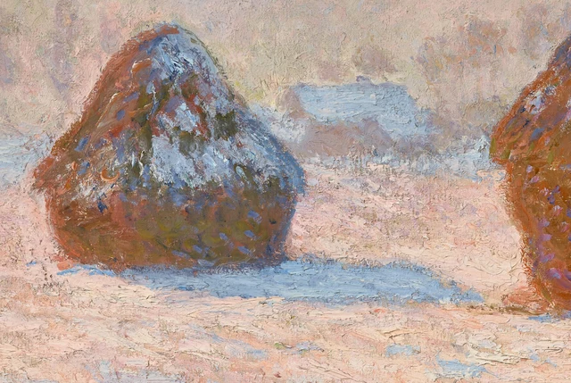

まず、右にある大きな麦の山の両側をたどってみよう。左の斜面では橙褐色がとても淡い空に接しており、形を見分けやすい。頂から右の斜面へ回ると青白い色が増え、肩のあたりで奥の屋根の青白さと接する。両側の明瞭さは同じではない。それでも、麦の山は厚みがあり、重く感じられる。その重さを支えているのは何だろう。

ここでは、この違いを手がかりに絵を読んでいく。モネは、どこも同じように明瞭な輪郭で麦の山を囲み、冬の朝から完全に切り離してはいない。強い左縁、右肩のやや曖昧な縁、幅のある下部、地面に沿う影が一緒にその形を支える。一部は周囲に近づき、別の一部は周囲から離れる。私たちは確かな物体を認めながら、同じ光が物と物の境を越える様子も見ることになる。
この山には、収穫後の穀物が保管されている。連作は英語でHaystacksと総称されることが多く、干し草を連想しやすいが、Gettyは本作を明確にWheatstacksと題し、学芸員も小麦の山だと説明している。丸く厚い下部と傾斜した上部を持つ、畑で穀物を保存するための大きな積み上げであり、今日よく見る小さな干し草の束とは規模が違う。モネは1890年から1891年にかけて、ジヴェルニーの自宅近くの麦の山を繰り返し描いた。本作もその連作の一つだ。見慣れた形が繰り返されると、光のもとで生じる差が目に入りやすくなる。ただし、この一枚だけを見ても、二つの山それぞれの縁、表面、影から、この朝を読み取ることはできる。Gettyの作品解説；Getty学芸員の対談
一 両側は同じように明瞭ではない

大きな山の左斜面には濃い橙褐色があり、空に近いところには桃色や紫の痕跡も交じる。頂から裾まで均一な線が引かれているわけではないが、境は確かだ。濃く密な色がごく淡い桃灰色に接し、麦の山が空気の中から浮かび上がる。左縁は整っておらず、外へ突き出す筆跡もある。それでも、大きな方向は弱まらない。
右斜面では別の方法が働く。青と淡い青が増え、斜面は右下へ広がり、肩のところで奥の雪を載せた屋根の青白さに接する。左側ほど色の分離がはっきりしない。手前と奥の物を見分けるには、山の長い傾斜をたどり、次に屋根の低く平たい縁と、その下からのぞく桃褐色の壁を見る必要がある。接点が十分に明瞭でなくても、こうした隣接関係があれば、家は麦の山の後ろに退く。
頂の下の雪も見てみよう。淡い色は、滑らかで閉じた帽子のように覆ってはいない。青白い筆跡が斜面に沿い、その間から褐色、紫、灰緑が見える。長く引かれたものもあれば、厚めの小さな塊になるものもある。雪を見せながら、その下の麦の山を繰り返し現す筆跡だ。雪は穀物の粗い表面を置き換えず、かえって凹凸を感じ取りやすくしている。
下部はずっと幅広く、ふくらんでいる。橙褐色が大きめの充実した面をつくり、紫、桃色、青の小さな筆跡が散らばる。上では傾斜に沿う跡が多く、下では細かく分かれ、横へ広がることが多い。目はここから二つの表面を読み取る。上は先細り、下は外へ張り出す。切り替わるところのほぼ水平な明暗の変化は肩の線に似ているが、散らばる色によって途切れる。右肩の外輪郭をひとまず見なくても、こうした内部の曲がり方が、すでにかなりの量感を与えている。
したがって、右肩の縁が曖昧だからといって、山全体が溶けているわけではない。左斜面が淡い背景から形を押し出し、下部は濃く充実した面を保ち、斜めの筆跡が上部の広がりを示す。いくつかの確かな関係があるため、別の一か所は背景に近づくことができる。形の確かさは画面の各所で支えられている。輪郭のどの部分も同じ強さで、それを言い直す必要はない。
二 足元の影も立つ形を支える
大きな麦の山は右に寄り、その頂は遠くの低い丘の線を越えて空へ入る。左の小さな山は低く、頂全体が淡い藤灰色の背景の前に収まる。二つは似ているが、高さをそろえて並ばない。大きいほうの裾は画面の下に近く、小さいほうは奥に退く。大きさと位置の違いから、まず手前と奥のある畑が成立する。
小さな山は、大きな山の色をそのまま繰り返してもいない。下部には灰緑や暗いオリーブ色が見えやすく、右縁の一部には深い青がある。大きな山の鮮やかな赤褐色に対して、ここではより暗い面がまとまる。形が似ていても、同じ色の組み合わせで両方を読み終えることはできない。小さい山は自身の暗部、青い縁、足元の影によって立つ。奥へ退きながら、大きい山を縮めた記号にはならない。
小さい山の裾から、青い影を右へたどってみよう。影は二つの山の間へ入り、大きい山の左側に近づくと縁が途切れ、淡い桃色の明るい地面を残す。大きな山の足元には、別の、さらに幅広い影が右下へ広がり、画面の端に近づく。似た方向への伸びが、離れた物体を一つの地面に置く。影の広がる幅を通じて、山が底からどれほどの空間を占めるかも感じられる。
影は麦の山の尖った頂を繰り返さない。低く広がり、立ち上がる形を地面に沿う方向へ置き換える。大きな山の裾の最も深い青紫は、とりわけ橙褐色の重さを畑につなぐ。右へ行くと青に明るい短い筆跡が入り、縁も雪の地面と入り組む。山の足元はしっかり重く、影の外端まで同じ重さを持つ必要はない。
その変化によって地面も具体的になる。影の中には乳白色の短い跡と暖色の隙間があり、外にも青白さと桃色が散らばる。粗い表面は影の境で突然終わらない。同じ畑が明るさの違う場所を通っているのであって、青い地面の隣に別の桃色の地面があるのではない。山と地面の接触は、裾の暗い帯と、影の内外をつなぐこうした小さな連続の両方に支えられている。
三 同じ青が別の場所へ向かう

今度は、小さい山の足元の青い影から、その奥の淡い青の屋根へ目を移そう。色は近いが、位置は大きく違う。屋根の下には壁があり、それに支えられて地面から持ち上がる。影は山の裾から伸び、畑に接して広がる。山の青白さは斜面に沿って傾く。青は、どれか一種類の物だけを表す印ではない。それを追う目は地面から屋根へ上がり、再び山へ戻る。
右側で大きな山と屋根の境がやや見分けにくくなる箇所も、これによって広い意味を持つ。両者が本当に一つの物になったわけではない。画面には前後を分けるだけの高低、方向、重なりがある。しかし色は、その分離を無関係なもの同士の隔たりにはしない。異なる距離に似た青白さが現れ、家、穀物、雪の地面が同じ朝にあることを見せている。
二つの山の間の明るい桃色の地面は重要だ。小さい山の青い影に明瞭な上縁を与え、その山の右斜面と大きな山の左斜面を隔てる。そこには新たな物体がないが、二つの量塊の間の距離が保たれる。もしこの部分も山の胴体のように密であったり、影のように一続きの青であったりすれば、隔たりはこれほど軽く明るくならないだろう。
空にも淡い桃色、杏色、クリーム色があるが、それで地面と一つになるわけではない。空の変化は緩やかで、筆跡の間に比較的広い色域がある。手前では青、桃色、淡い黄土色、白に近い色が密に入り組む。その間を、遠くの淡い藤灰色の丘が緩やかに起伏しながら横へ延びる。近い色が繰り返されても、方向、面積、密度が違うため、空と地面はそれぞれの場所を保つ。
この絵を「青と橙の補色関係」と要約すると、見る経験を短く切り詰めてしまう。モネは麦の山を暖色で塗ってから、冬に寒色を配したのではない。橙褐色の中にはすでに青紫があり、影には明るい短い筆跡が入り、遠い屋根と近い山の頂が一時的に近づくこともある。色のつながりは物の名前を越え、形の違いは別の関係が引き続き支える。一か所の縁が弱まると、そのつながりが見えやすくなる。
四 長く見続けられる一つの朝
図2で大きな山の足元を見ると、淡い筆跡の一部には畝のようなはっきりした起伏があり、その隣には薄くまばらな部分がある。図3でも、小さな山の雪、家の屋根、近い雪面は淡い青を含みながら、筆跡の幅や覆い方の密度が異なる。手前の地面には目を止める凸部が多く、遠い屋根はより速く一つの面にまとまる。色がつなぎ、表面の扱いが距離を引き続き示す。
Gettyの学芸員スコット・アランは、ベス・ハリスとの展示室での対談で、本作の厚塗りと、厚い筆跡の間にカンヴァスが透けるほど薄く覆われた部分があることを指摘している。また、場所による表面処理の違いが手前と奥を分ける助けになるとも述べる。厚薄が交じることで、雪の畑は粗さを残し、一様な白い上着にはならない。対談の文字稿、約3:01–3:31
こうした筆跡は近くで見る価値があるが、一筆ずつを風景の中の同じ大きさの雪の塊と考えることはできない。拡大すると、淡い色の稜、褐色の隙間、重なった筆跡が目立つ。全図に戻れば、それらは一緒になって傾いた山の頂、広い雪の地面、遠い屋根になる。畑を再び見るために、絵具の存在を忘れる必要はない。その厚みと方向こそが、この畑に距離と質感を与える方法なのだ。
Gettyによれば、モネは戸外で描き始めた後、各作品の色彩関係を調和させるため、アトリエでも調整を続けた。対談でも、これらの画布に繰り返し手を入れたことが語られる。したがって、目の前の一瞬を満たす統一された光は、何度もの制作を経て生まれうる。短い筆跡の生き生きした感じは、全体が一度の短い注視の間に素早く描かれたという意味ではない。Gettyの作品解説
大きな山の右肩と屋根の接点へ戻ろう。そこは依然として、左斜面ほど容易には背景から分かれない。細かく見ても、完全な輪郭が付け加わったわけではない。目がほかに何を頼れるかが、より明らかになったのだ。厚みのある下部、斜面の向き、足元に広がる影、奥の家の壁が一緒に山を保つ。屋根に近い青白さは、確かな物体に属しながら、同時にそれを周囲の冬の朝へつなぐことができる。モネが描く空気は物の外にあるだけではない。物を見分ける私たちの方法にも入り込んでいる。
補足の読み方 形はどこでも明瞭でなければならないか
秦漢のSAE（Self-as-an-End）美学に属するThe Beauty of Perception《感知之美》は、目の前に現れる様子、その名づけ、そして快をもたらすかどうかを区別する。この区別から本文の判断を問い直してみよう。麦の山が「確かな量感をもって描かれている」と言うとき、どの境も見分けられることを、暗黙の基準にしていないだろうか。これは現代の鑑賞上の問いであり、モネの思想を推定するものではない。The Beauty of Perception、第2–3節
図2の右肩と屋根が接する青白い部分をもう一度見る。まず両者の間に、端から端まで明瞭な境を見つけようとしてみる。ある箇所を認めるために、隣の斜面や壁を繰り返し見直す必要があるなら、急いで補わず、その部分をしばらく不確かなままにしておこう。次に全図へ戻る。その局所的な不確かさによって、山全体は量感を失っただろうか。失わないなら、「境が十分に明瞭でない」と「物体が描き出されていない」は同じ判断ではない。
逆の方向から本文を確かめることもできる。右の接点はやはり曖昧すぎ、空気の感じが増すとも思わない読者がいるかもしれない。そのとき比べたいのは、明瞭な左縁、下部の厚み、広がる影が、右肩で描き切られていない部分を本当に補えているかどうかだ。足りないなら、確かな量感があるという本文の主張は限定する必要がある。足りるなら、同じ物の縁が異なる明瞭さで現れることを認める理由がある。最もはっきりした一か所を、全体が満たすべき基準にする必要はない。
この問いは、どの色が好きかとも異なる。桃色と青を特に好まない人も、その間で山がどう立つかは見て取れる。逆にこの配色が好きでも、量感の成立を説明できないことはある。SAEがここで加えるのは、好むこと、物を認めること、描かれた物に重みがあると判断することを分けて問う一歩だ。あの青白い接点を見るとき、曖昧さを自動的に美とたたえる必要も、常に修正を待つ欠点と考える必要もない。
画像と資料について
視覚的な細読には、Getty公式IIIFの4096 × 2634ピクセルの画像を用いた。全図は公式ファイルをそのまま保持し、図2と図3は復号後の元画素から切り出して、元のICCプロファイルを保ったPNGとして保存している。拡大縮小、色調補正、シャープ化、修復、生成による補足は行っていない。複製画像と画面表示は、原作の実際の色や表面に代わるものではなく、個々の筆跡の顔料や塗布順序も確定できない。
画像はGettyのCC0による公開対象であり、館の解説文には別にCC BY 4.0が適用される。本文の視覚的判断は独自の解釈である。史実と素材・画法に関する説明はリンク先の資料に基づき、館の賛同を示すものではない。参考資料と画像クレジットも参照。